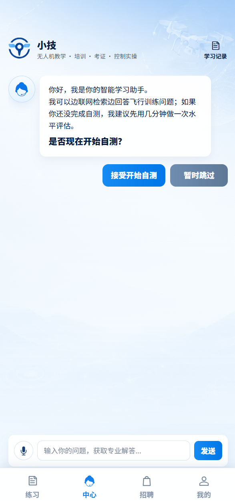
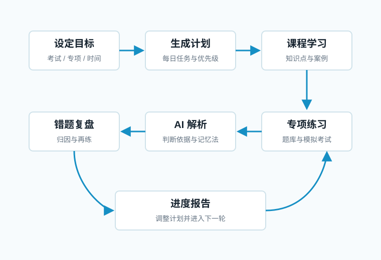
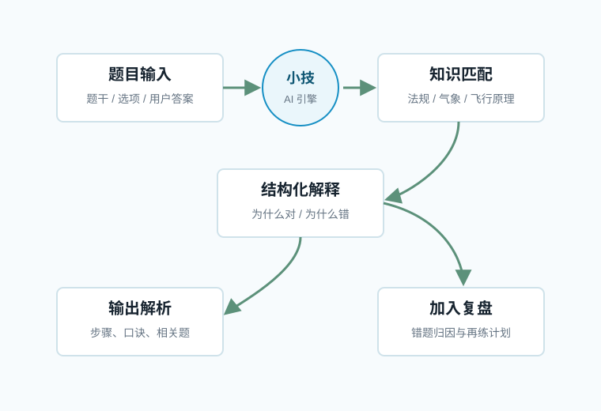
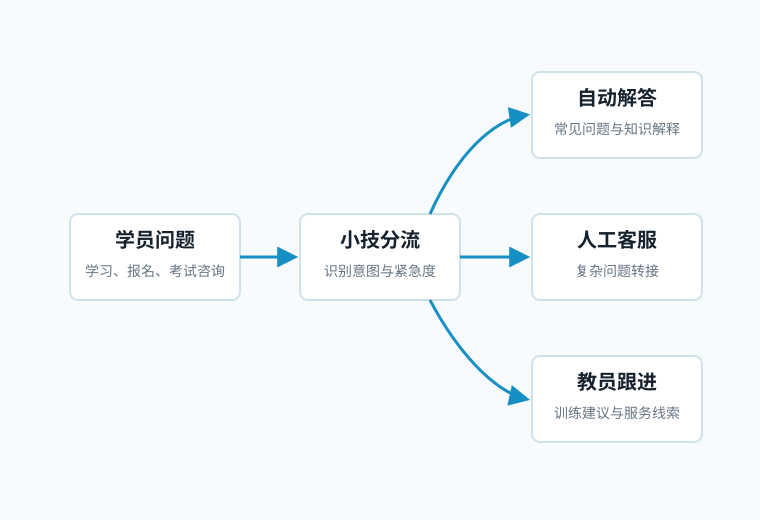
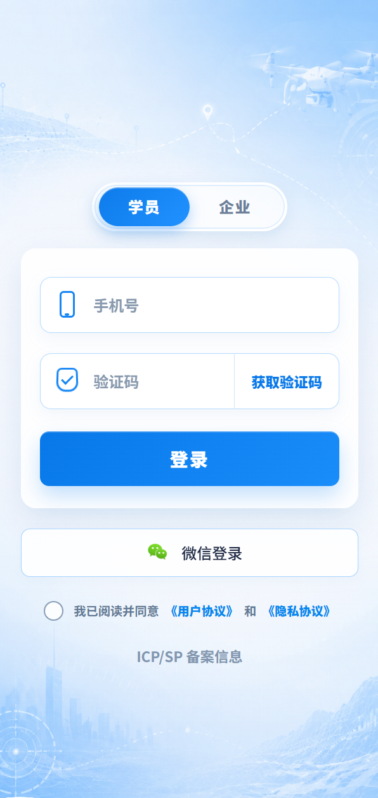
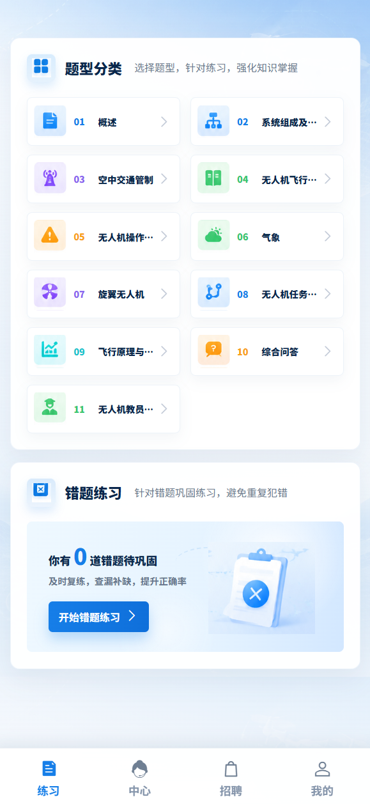
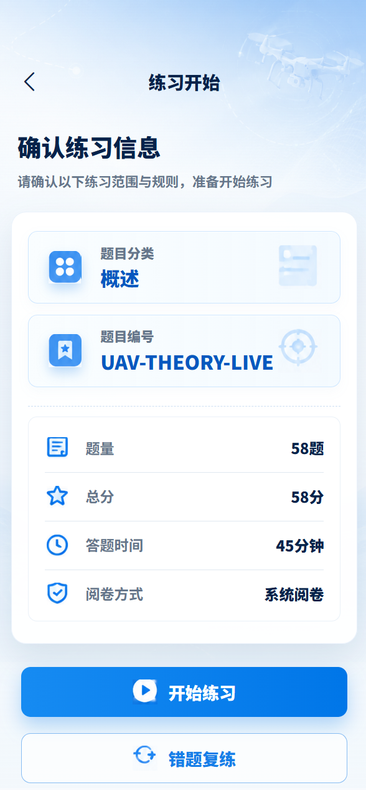
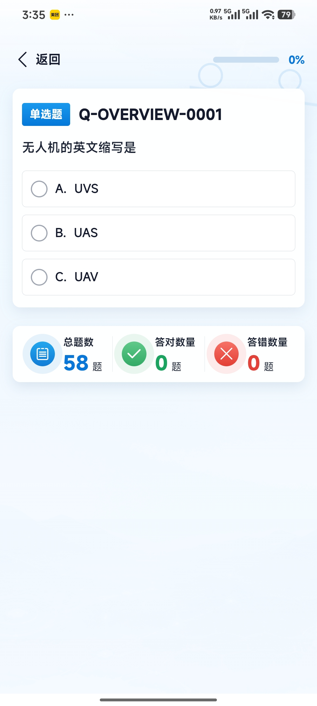
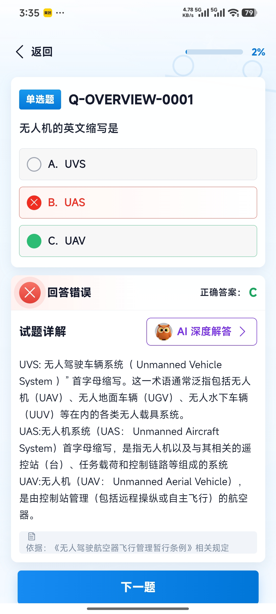
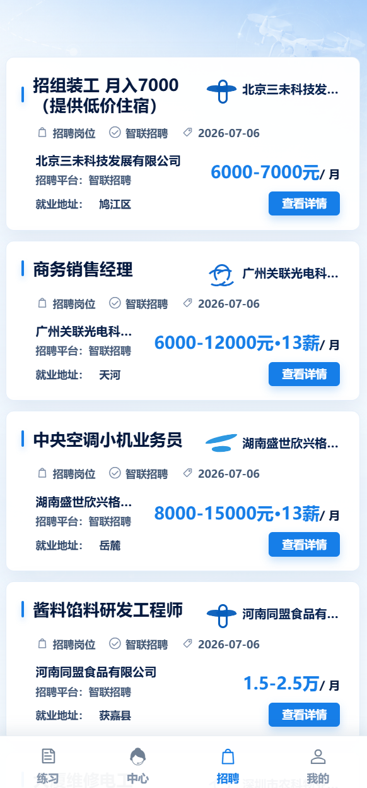

面向学员
提供学习计划、专项练习、错题归因、AI 讲解和进度反馈。
面向无人机学习、训练、考证的智能产品应用
把课程学习、题库练习、AI 解析、错题复盘和客服咨询整合到一个清晰的学习工作台里，让学员知道下一步该学什么、该练什么、该问什么。

产品定位
它不是单纯聊天机器人，也不是单一题库工具。小技的核心定位是把学习任务、训练数据和答疑能力组织起来，持续推动学员完成“学习 - 练习 - 解析 - 复盘 - 咨询”的闭环。
提供学习计划、专项练习、错题归因、AI 讲解和进度反馈。
沉淀学员问题、训练结果和服务线索，便于教员跟进。
统一承接课程、题库、咨询和活动入口，减少分散跳转。
流程图
以下流程用于说明产品结构和用户路径，后续可直接作为 PRD 或设计稿输入。



真实界面
以下页面展示小技在登录、练习、答题、智能服务和招聘信息中的实际呈现方式，说明产品如何把学习路径和服务入口组织起来。

入口保持简洁，突出品牌识别和账号登录动作，降低学员进入系统的操作成本。

聚合练习入口和题型分类，让学员能快速选择当前训练任务。

在开始答题前明确题量、规则和练习目标，帮助学员形成稳定的训练节奏。

答题过程突出题干、选项和进度，保证练习时的阅读效率和操作稳定性。

提交后呈现结果反馈和解析入口，把一次练习自然延伸到复盘与巩固。
集中承接 AI 答疑、学习建议和智能服务，是小技作为助手能力的核心入口。

展示培训与就业相关信息，帮助学员从学习路径继续连接到行业机会。
应用场景
小技适合放在首页、练习结果页、AI 解析页和客服页中，负责把用户的问题转换为下一步学习动作。